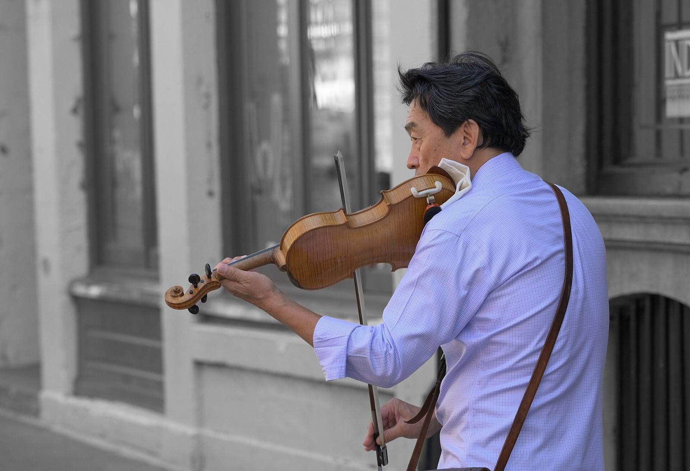

Les musiciens de rue ont désormais leur carte
Six lieux, une autorisation gratuite, et des règles simples : la ville veut que la musique reste dans la rue.

Il joue tous les mercredis sous les arcades, toujours au même endroit, toujours les mêmes airs de Bach que les enfants finissent par fredonner. Depuis lundi, il a une carte, plastifiée, accrochée à l'étui de son violon.
La ville a créé une autorisation simple et gratuite pour les musiciens de rue : une inscription en ligne, une courte audition, et l'accès à six lieux choisis avec les commerçants et les habitants.
« On ne voulait pas d'une règle de plus : on voulait que la musique reste, et que tout le monde s'y retrouve. »
Les règles tiennent sur une page : pas d'amplification après 20 h, une heure au plus au même endroit, et un roulement affiché sur chaque place.
Les premiers retours sont bons. Les commerçants y voient une animation gratuite, les habitants un peu de calme retrouvé le soir. Et les musiciens, une reconnaissance.
Pour écrire un article : copiez cette page, changez le titre, la photo et le texte, puis ajoutez une ligne dans les archives.